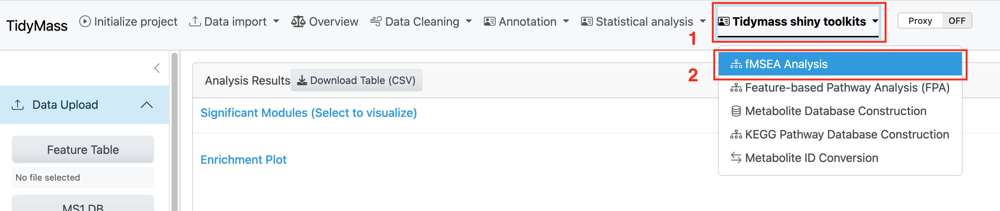
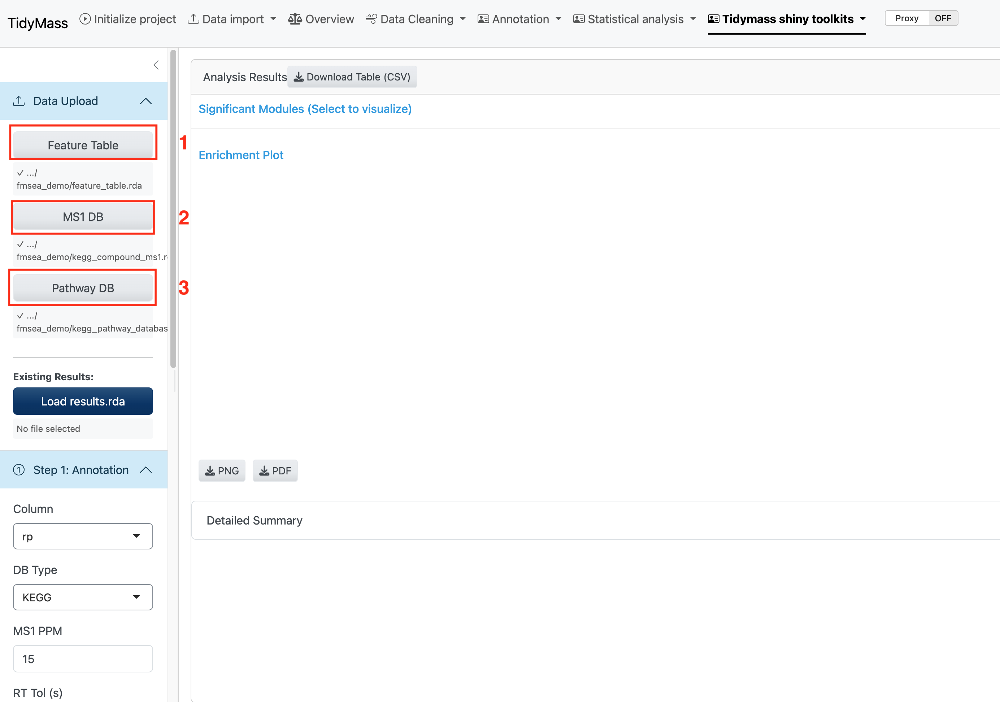

1 Summary of Inputs
featureMSEA runs through the TidyMass Shiny web application. Visit tidymassshiny.jaspershenlab.com or run it locally, then navigate to fMSEA Analysis under Tidymass Shiny Toolkits.

Figure 1.1: Launching the fMSEA Analysis module
1.1 Required files
Three .rda files are required. These can be prepared in R or downloaded from the demo package (see below).

Figure 1.2: Overview of required input files
| File | Description |
|---|---|
| Feature Table | Processed feature table from your metabolomics experiment |
| MS1 Database | Metabolite reference database for annotation (KEGG or HMDB) |
| Pathway Database | Pathway membership database (KEGG, HMDB, iMETpD, Reactome, or WikiPathways) |
1.2 Demo data
A ready-to-use demo package is available on Google Drive. Download and unzip; the package contains:
-
feature_table.rda— processed feature table -
ms1_database.rda— KEGG MS1 annotation database -
pathway_database.rda— KEGG pathway database
1.3 Uploading files
Click the three buttons in the upload panel to select each .rda file from your local computer.

Figure 1.3: Selecting the three input files
Shortcut: If you already have a saved
fmsea_result.rdafrom a previous run, upload it via Existing Results to skip annotation and enrichment and go directly to visualization.

Figure 1.4: Uploading an existing results object